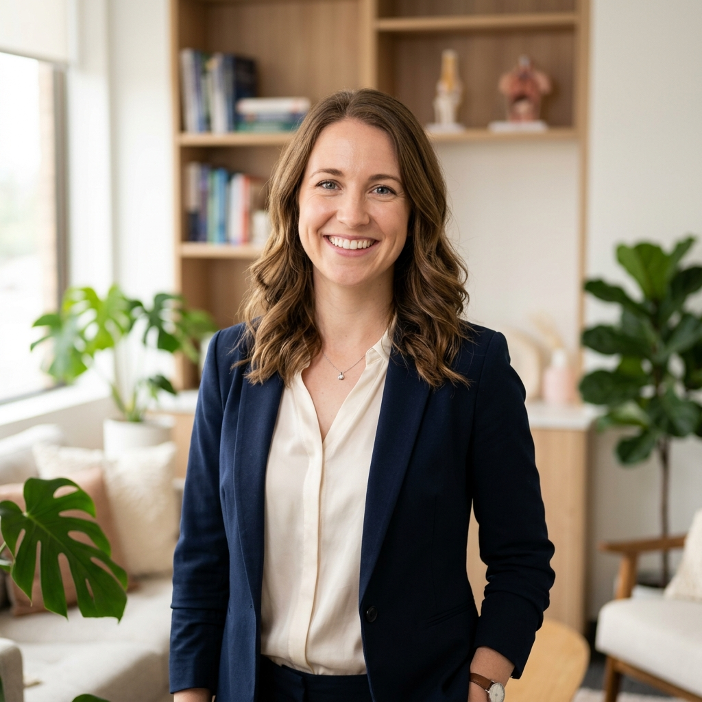
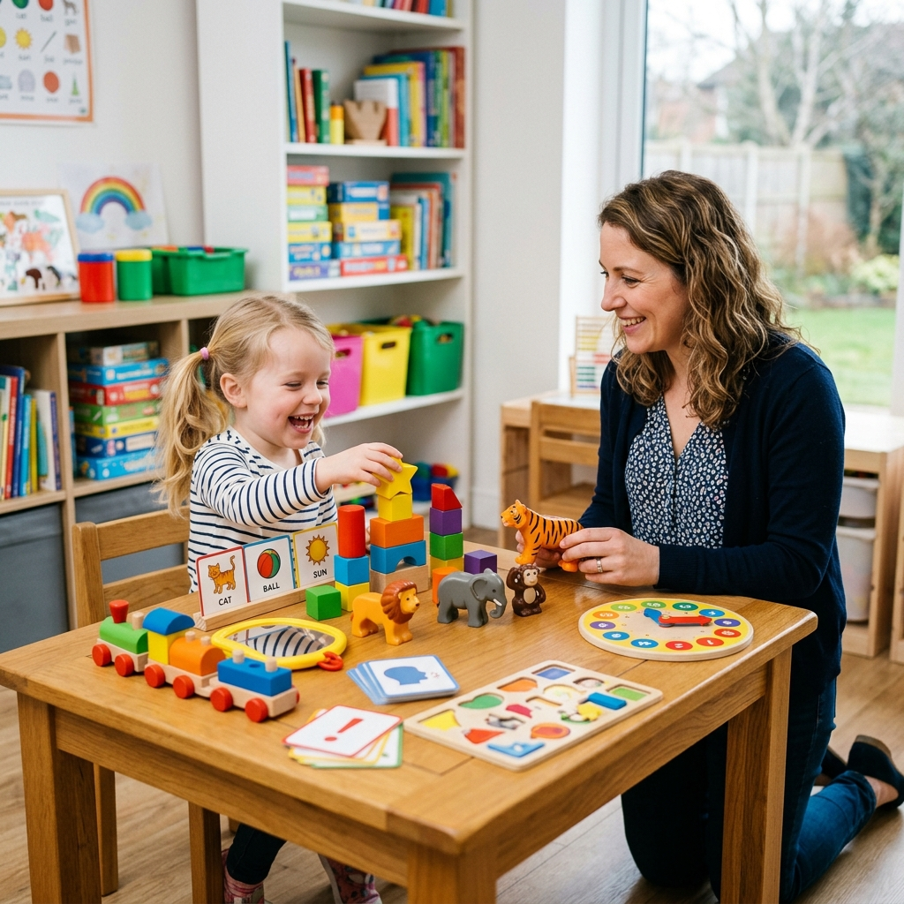

Com anos de experiência em reabilitação e desenvolvimento, meu propósito é ajudar você ou seu familiar a se comunicar com mais clareza, conforto e alegria.
Acredito em uma prática baseada em evidências, mas sempre conduzida com sensibilidade e muito respeito à história de cada paciente. A comunicação é a base das relações humanas, e estou aqui para facilitar essa ponte.
Tratamentos focados nas suas necessidades específicas para recuperar e aprimorar as funções da fala e audição.
Foco na melhora da articulação, tratamento da fluência e gagueira, além do acompanhamento detalhado no desenvolvimento infantil e na aquisição da escrita.
Tratamento das funções ligadas à respiração, sucção, mastigação e deglutição, reequilibrando a musculatura facial para mais qualidade de vida.
Cuidado especializado para disfonias (rouquidão constante, cansaço vocal) e aprimoramento focado em alta performance vocal para uso profissional.
Abordagem técnica para a reabilitação da deglutição segura pós-AVC, intubações prolongadas ou decorrente de doenças neurológicas.
Avaliação auditiva completa, indicação e adaptação de aparelhos auditivos de alta tecnologia e terapias voltadas ao alívio e controle do zumbido.
Minha prática clínica incorpora abordagens modernas e consolidadas para garantir uma reabilitação mais rápida e eficaz. Utilizamos tecnologias aceleradoras e metodologias avançadas.
Uma abordagem cognitivo-motora de ponta que utiliza toques precisos no rosto do paciente, guiando terapeuticamente a musculatura correta para produzir os sons da fala.
Tecnologias de ponta utilizadas para tratar inflamações, melhorar o tônus da musculatura orofacial e acelerar o retorno das funções e performance muscular.

A Ludoterapia transforma a sessão com a criança em um momento de diversão. Através de jogos, brinquedos e atividades direcionadas, estimulamos o desenvolvimento da linguagem, audição e motricidade no ritmo dos pequenos.
Nossa clínica oferece um espaço lúdico e seguro para que a criança perceba a terapia como uma brincadeira gostosa, não como uma obrigação, garantindo maior adesão e melhores resultados.
Saber mais pelo WhatsApp